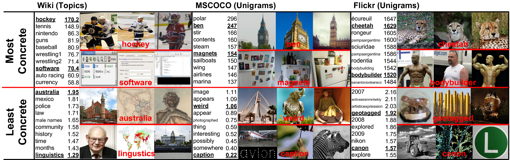

# Quantifying the Visual Concreteness of Words and Topics in Multimodal Datasets
[Jack Hessel](https://www.cs.cornell.edu/~jhessel), [David Mimno](https://mimno.infosci.cornell.edu), [Lillian Lee](https://www.cs.cornell.edu/home/llee/)
NAACL-HLT 2018 ([paper link](paper.pdf))
---

*Examples of concrete words and topics from three datasets. Our algorithm is able to automatically compute concreteness scores based on the geometry of visual and textual representations.*
---
In this work we give a method for quantifying how "concrete" a given
word/topic is within a specific dataset; concrete concepts are those
associated with more consistent images. In addition to correlating
with human judgment, we demonstrate that concreteness scores are
highly correlated with retrieval performance. In general, the more
concrete a words/topic is, the easier it is for machine learning
algorithms to recognize.
#### Update!
We released a new version of the paper on arXiv (the new version is
linked above) which fixes a small typo in Equation 3.
## Dataset and Code
### Wikipedia
A README of the wikipedia dataset is available
[here](wiki_README.txt). The full 4.9GB dataset can be downloaded
[here](https://drive.google.com/open?id=1Lkt4OOMeyYSvm2w_UfQxYZrGcEIEsKNL).
The images.txt file for the wikipedia set is [here](https://drive.google.com/file/d/1Tj_zDYNdVATBoufIn7wIDbp95iPB7Vb4/view?usp=sharing).
Full details of dataset construction are available in the paper. Image
data for 549K images are provided as pre-extracted features from
[ResNet50](https://arxiv.org/abs/1512.03385). While raw images are
unavailable because image copyright varies from image-to-image on
wikipedia, Wikipedia urls are included and can be re-scraped if
needed, though some of the images may have been removed from the commons.
If you have questions about this data, or encounter bugs, please
e-mail jhessel@cs.cornell.edu.
### British Library
A README of the british library dataset is available
[here](bl_README.txt). The full 38GB dataset can be downloaded
[here](https://drive.google.com/open?id=1UDPynI4X62jwf7tqSXY3dtc3HWk6FjPh).
Full details of the dataset construction are available in the paper.
The 405K images are originally from the [British
Library;](https://data.bl.uk/digbks/) they were released to the
[public
domain](https://creativecommons.org/publicdomain/mark/1.0/). Image
data is provided as jpgs; each is resized so that the largest dimension
is at most 600 pixels.
If you have questions about this data, or encounter bugs, please
e-mail jhessel@cs.cornell.edu.
### Code
<a href= https://victorssilva.com/>Victor Silva</a> implemented the <a href=https://github.com/victorssilva/concreteness>concreteness algorithm</a> described in section 3 of our paper for word types!
Here's a function that computes the concretness of <a href=https://gist.github.com/jmhessel/db0e5e1885a2cdf99742dec8a0167377>topics,</a> which is similar to computing the concreteness of word types, except the computation accounts for continuous topic weights (see section 3.2 of the paper).
## Citation
```
@inproceedings{hessel2018concreteness,
title={Quantifying the visual concreteness of words and topics in multimodal datasets},
author={Hessel, Jack and Mimno, David and Lee, Lillian},
booktitle={NAACL},
year={2018}
}
```
<sub><sup>
Images on this website are reproduced in accordance with the following
licensing information. The original authors of the images do not
necessarily endorse this work or the opinions expressed in it.
Copyright information is given left-to-right.
</sub></sup>
<sub><sup>
Wikipedia: "hockey" -- Dan4th Nicholas (CC BY 2.0); Leech44 (CC BY
3.0); Usasoccer2010 (CC BY-SA 3.0). All "software" images derive from
software licensed under GNU GPL v3; screenshot used under fair
use. "Australia" --Toby Hudson (CC BY-SA 3.0); public domain; public
domain. "linguistics" -- Suasysar (public domain); USDA (public
domain); Rama (CC BY-SA 2.0 FR).
</sub></sup>
<sub><sup>
MSCOCO: "ben" -- Michael Garnett (CC BY-NC-ND 2.0); Giovanni Tufo (CC
BY-NC-ND 2.0); Edinho Souto (CC BY-NC-SA 2.0). "magnets" -- Gabriel
Pires (CC BY-NC-SA 2.0); the_blue (CC BY-NC-SA 2.0); Dennis S. Hurd
(CC BY-NC-ND 2.0) "weird" -- waferboard (CC BY 2.0); jaci XIII (CC
BY-NC-SA 2.0); Ozzy Delaney (CC BY 2.0). "caption" -- Robert G. Daigle
(CC BY 2.0) TJ Gehling (CC BY-NC-ND 2.0); amhuxham (CC BY-NC-SA 2.0)
</sub></sup>
<sub><sup>
Flickr: "cheetah" -- Nathan Rupert (CC BY-NC-ND 2.0); Karen Dorsett (CC BY-ND
2.0); Vearl Brown (CC BY-NC 2.0). "bodybuilder" -- Kent (SSCusp) (CC
BY-NC-ND 2.0); Frank Carroll (CC BY-NC-SA 2.0); Kent (SSCusp) (CC
BY-NC-ND 2.0). "geotagged" -- tpholland (CC BY 2.0); s2art (CC
BY-NC-SA 2.0); Joe Penniston (CC BY-NC-ND 2.0). "canon" --
ajagendorf25 (CC BY 2.0); Tom Lin (CC BY-NC-ND 2.0); Leo Reynolds (CC
BY-NC-SA 2.0).
</sub></sup>